Pictures
Every picture in the log, in the order it was made. Pictures from the running game are screenshots. Pictures from the image model carry the prompt that made them; none of them is in the game as it is. Things that were rebuilt are shown before and after.
Day 1 Thursday 12 November
GLEMT: the idea, and the story before any code
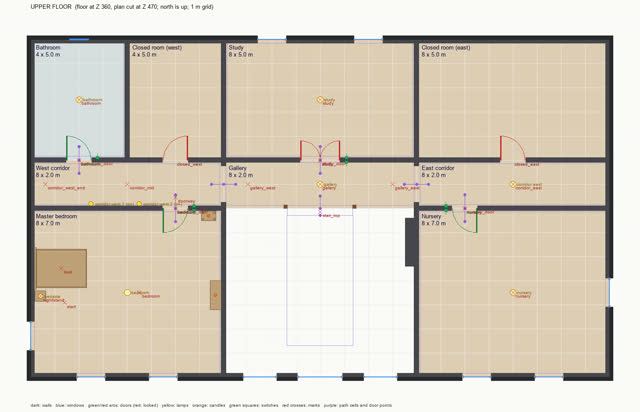
The upper floor as the plan tool draws it: rooms, doors with their swing, lamps, switches, and the points the ghost's paths run through.
Drawn by our tools Thu 12 Nov, 16:45

Four direction pictures: the house in the pines, the hall with the great stair, the upstairs corridor, the woodshed.
Image model Thu 12 Nov, 16:45
PromptA large old manor house built around 1900, seen from outside at night in a violent storm in a dense forest of tall dark pine trees. Three…704 words
A large old manor house built around 1900, seen from outside at night in a violent storm in a dense forest of tall dark pine trees. Three storeys of dark weathered stone and timber, steep slate roofs with gables and tall brick chimneys, a covered front porch with steps, rows of tall narrow windows. Every window is dark except a single window on the upper floor that glows a warm yellow. Driving rain slants across the picture, the pines bend in the wind, a fork of lightning in the low clouds behind lights the wet roofs and the trunks a cold blue-white for a moment; a muddy gravel drive with puddles leads from the foreground to the porch between the trees. Wide shot from the edge of the forest, the house in the middle of the frame, dark sky above it with space for a title. Photographic, real materials, a still from a 1970s horror film, 35mm film grain, deep blacks, cold blue night with the one warm window. No people, no cars, no animals. No text, no letters, no numerals, no logos, no signs. The entrance hall of an old manor house built around 1900, at night, a tall double-height room seen from near the front door. A great dark oak staircase with carved newel posts and turned balusters rises along the side wall to a gallery that runs round the upper floor. A stone fireplace, unlit, a floor of worn black and white marble tiles, dark wood panelling, a heavy closed front door. Tall arched windows on the stair landing, rain streaming down the glass, a flash of lightning outside throwing cold blue-white light and long window shadows across the stair and the floor. The house was rented for a film in the 1970s: a 1970s film spotlight on a black tripod stand stands by the stair, switched off, coils of thick black cable lie on the tiles, and a chalk cross is drawn on the floor at the foot of the stair. Dust in the air. Dark and moody. Photographic, real materials, a still from a 1970s film, 35mm film grain. No people. No text, no letters, no numerals, no logos, no brand names, no labels. The long upstairs corridor of an old manor house built around 1900, at night, seen from one end, the corridor running away from the camera. Dark wood panelling to waist height and faded patterned wallpaper above it, a worn red runner carpet over dark floorboards, closed panelled doors along both sides, a row of small brass wall lamps with pleated fabric shades giving a dim warm light in pools along the walls, the far end dark, a tall window at the very end with rain on the glass and a faint cold light. The house was rented for a film in the 1970s: a thick black cable runs along the skirting board and is taped across the runner, and a small chalk cross is drawn on the carpet in the middle of the corridor. Dust in the air. Dark and moody, the darkness growing towards the far end. Photographic, real materials, a still from a 1970s film, 35mm film grain. No people. No text, no letters, no numerals, no logos, no brand names, no labels, no pictures with faces. An old woodshed among tall pine trees behind a manor house, at night in the rain. A small open-fronted shed of weathered grey vertical planks with a low sloping roof of moss-covered boards, its inside stacked to the roof with split firewood logs, a heavy chopping block standing in front of it, a few logs lying on the wet ground. A muddy path leads to it between the dark straight trunks of the pines, fog lies low between the trees, rain falls through the beams of light. The only light is a flash of lightning in the sky above the trees and, far behind between the trunks, the faint warm glow of the house's windows. A black film cable runs along the path. Photographic, real materials, a still from a 1970s horror film, 35mm film grain, cold blue night, dark and moody. No people, no animals. No text, no letters, no numerals, no logos, no signs.

The game finds its shape: four days to empty a dead director's house
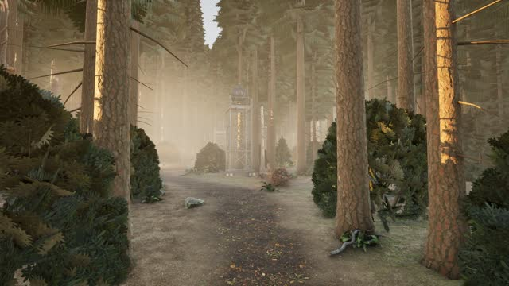
The forest path behind the house as the light goes, from the running game.
From the running game Thu 12 Nov, 21:50

The bonfire in the yard at night.
From the running game Thu 12 Nov, 21:50
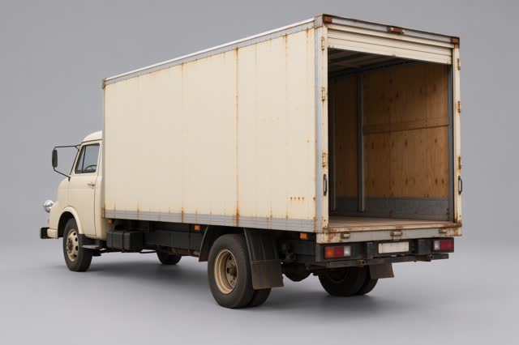
The reference picture for the truck: a plain studio shot from the image model.
Image model Thu 12 Nov, 21:50
PromptAn old removal truck of the 1970s, shown as a single object: a medium box truck about seven metres long with a rounded cab in faded cream…201 words
An old removal truck of the 1970s, shown as a single object: a medium box truck about seven metres long with a rounded cab in faded cream paint, round headlights, a chrome bumper with rust spots, a tall plain cargo box of riveted cream-painted sheet metal with rust streaks at the seams, a dark steel chassis, twin rear wheels with plain steel rims, mud flaps. The roller door at the rear is fully open and the cargo box is completely empty: inside it bare plywood walls and a worn wooden plank floor can be seen. Completely plain panels with nothing written or painted on them. Centred, the whole object in frame with clear space around it, three-quarter view from behind and from the left, slightly above, so that the open rear and the long left side are both seen, on a seamless plain mid-grey studio background, soft even diffuse studio lighting from all sides, no cast shadow on the background, no other objects, no people, photorealistic product photograph, sharp from front to back. No text, no letters, no numbers, no logos, no brand names, no maker's badges, no name plates, no number plates, no labels, no stickers, no stencils, no markings.
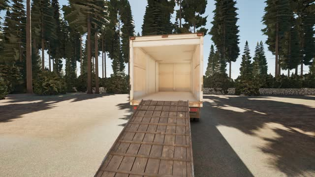
The truck in the drive, in the game.
From the running game Thu 12 Nov, 21:50
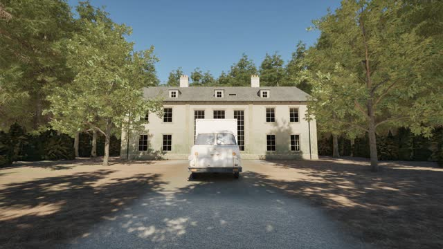
The house from the gate: not a mansion yet.
From the running game Thu 12 Nov, 21:50
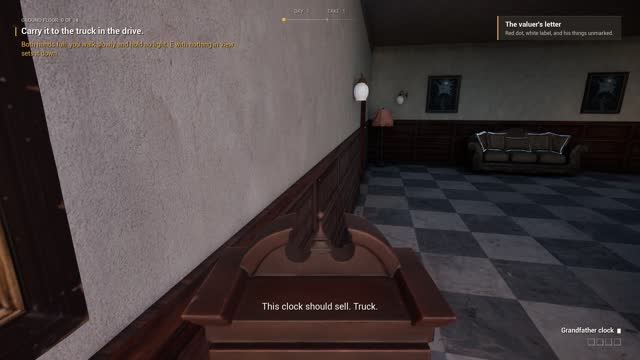
Carrying the hall clock: the guide at the top left, the owner's line at the bottom.
From the running game Thu 12 Nov, 21:50
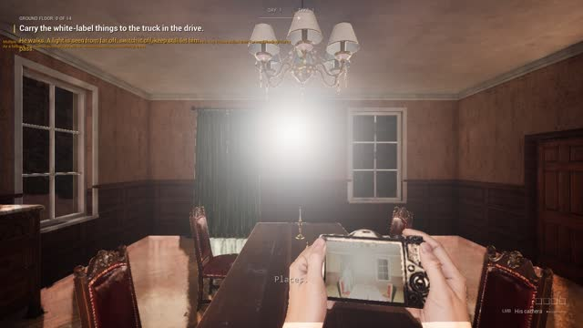
The flash picture in the dining room. On the camera's small screen a figure stands by the curtain; the room itself is empty.
From the running game Thu 12 Nov, 21:50

The first night: the house gets its face, the forest is replaced, and day one fails on real feet
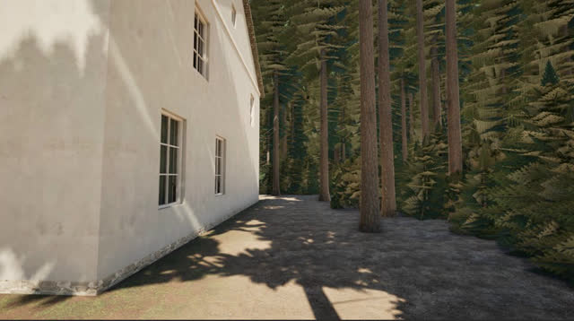
Before 20:39: white render and holes for windows.
From the running game Thu 12 Nov, 22:55
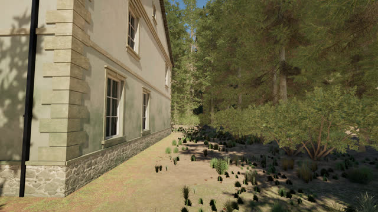
After 22:15: quoins, plinth, window frames, downpipe, damp.
From the running game Thu 12 Nov, 22:55
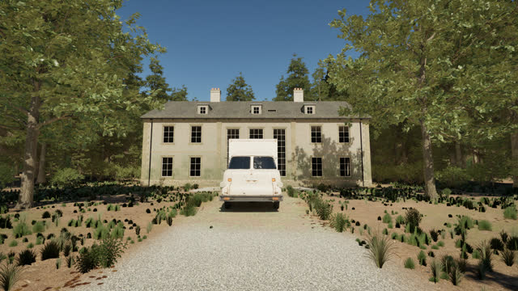
The front from the gate at 22:10, in the new forest.
From the running game Thu 12 Nov, 22:55
Before Earlier in the evening: our own trees, cards of branches.
From the running game Thu 12 Nov, 22:55

After 22:12: the engine's conifers and shrubs, fallen trunks, low sun through the mist.
From the running game Thu 12 Nov, 22:55
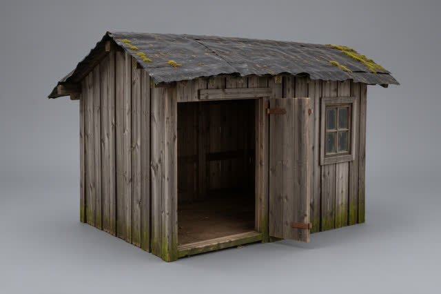
The reference picture for the hut: a small weathered board hut with a tarred roof and an open door, on a plain grey studio background.
Image model Thu 12 Nov, 22:55
PromptA small old wood hut from a northern forest, shown as a single object, about three metres wide, two and a half metres deep and two and a…203 words
A small old wood hut from a northern forest, shown as a single object, about three metres wide, two and a half metres deep and two and a half metres tall: walls of rough vertical boards weathered silver-grey with dark gaps between them and green algae near the ground, a low sagging ridge roof covered with old black tarred roofing felt, torn at one edge, with moss on it, the whole hut leaning slightly to one side. In the front wall a wide doorway without a threshold, its plank door on rusty strap hinges hanging wide open to the outside, and through the doorway the inside is seen: completely empty, dark, bare board walls and a bare earth floor. In the side wall one small square window with four dirty panes. Nothing stands in or around the hut. Centred, the whole object in frame with clear space around it, three-quarter view from slightly above, on a seamless plain mid-grey studio background, soft even diffuse studio lighting from all sides, no cast shadow on the background, no other objects, no people, photorealistic product photograph, sharp from front to back. No text, no letters, no numbers, no logos, no brand names, no labels, no markings.
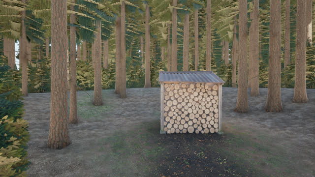
Before 21:35: a firewood rack, not a hut.
From the running game Thu 12 Nov, 22:55
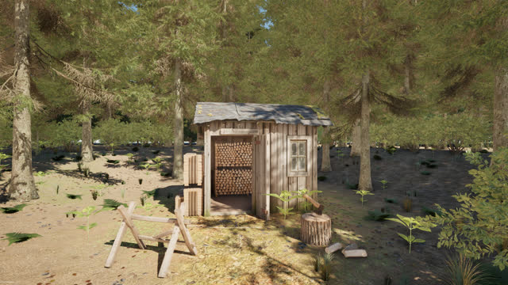
After 22:11: a hut one can walk into, the wood inside.
From the running game Thu 12 Nov, 22:55
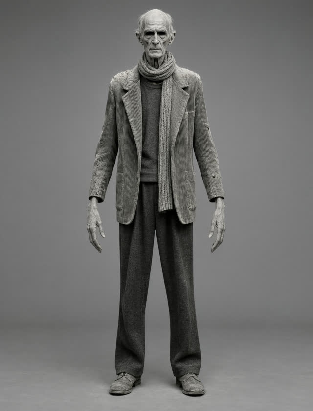
From the image model at full settings: chosen from three seeds because his arms, legs and fingers stand clear of each other, which a rig needs.
Image model Thu 12 Nov, 22:55
PromptA dead old man with no eyes. Where his eyes should be there are only two deep, empty, black hollows full of shadow: no eyeballs, no…349 words
A dead old man with no eyes. Where his eyes should be there are only two deep, empty, black hollows full of shadow: no eyeballs, no eyelids, nothing in them but darkness. His face is long, grey and dry as old paper, sunken at the cheeks and temples, the skin drawn tight over the cheekbones, the lips shrunk to a thin closed line, a few wisps of colourless hair on a bald head. He has been dead for fifty years and is covered in pale grey dust; nothing about him is bloody or torn. Full-length studio photograph, a creature and costume reference for a serious horror film: a very tall, painfully thin man of about seventy, nearly two metres tall, narrow sloping shoulders, a long thin neck, long thin arms, very long bony hands with long thin fingers. He is the grey of an old black-and-white film from head to foot. He stands upright in an A-pose for 3D scanning, facing the camera squarely: both arms straight and angled out from the body at forty-five degrees, hands well away from the hips, both hands empty and open with all five fingers straight and spread apart, legs straight and apart at shoulder width. He wears a 1970s corduroy jacket with wide lapels, unbuttoned, faded to dusty grey and threadbare at the elbows, a long knitted wool scarf wound once round his neck with one end hanging down his chest, a dark grey roll-neck jumper, loose dark grey wool trousers, worn dusty leather lace-up shoes. Dust lies on his shoulders and the top of his head. Front view, exactly straight on, long lens, no perspective distortion, the whole figure in frame from the top of his head to the soles of his shoes, centred. Seamless plain mid-grey studio floor and background, soft even diffuse lighting from all sides, only a faint contact shadow under the shoes. Photorealistic, sharp from head to feet. Nothing in his hands, no props, no other people, no hat, no glasses. No blood, no wounds, no bare bone, no teeth showing. No text, no letters, no logos.
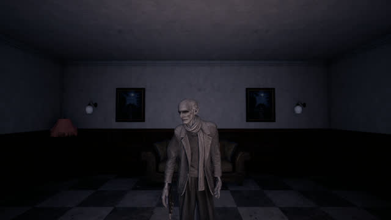
In the running game, lit by the buyer's lighter at two metres. The room is a bare test stage.
From the running game Thu 12 Nov, 22:55
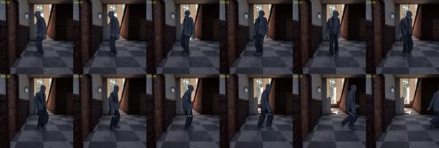
Twelve frames from the running game, laid side by side by a script: the head leads, the feet step after it.
From the running game Thu 12 Nov, 22:55
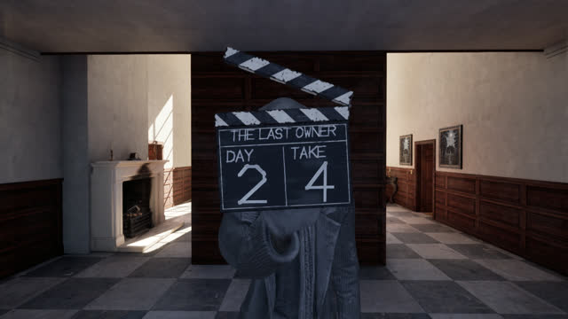
In the running game, the moment before “Cut.”
From the running game Thu 12 Nov, 22:55
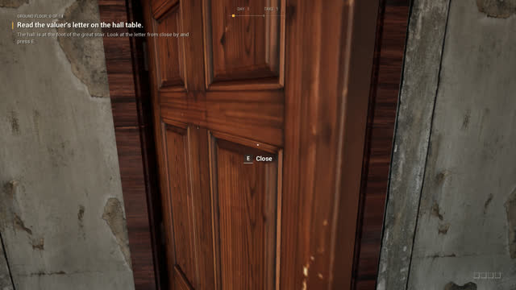
The walking automaton at the first door. A picture taken forty seconds later is the same picture.
From the running game Thu 12 Nov, 22:55

Day 2 Friday 13 November
Midnight: a correction, doors that let you through, and a fairer night

From the verifier's run, take 2: the chair on its way to the fire, which shows through the kitchen window. The blotched walls are a known fault.
From the running game Fri 13 Nov, 00:30
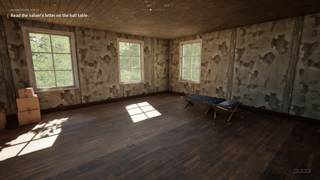
Before 22:37: the same blotches over every wall, read as camouflage.
From the running game Fri 13 Nov, 00:30
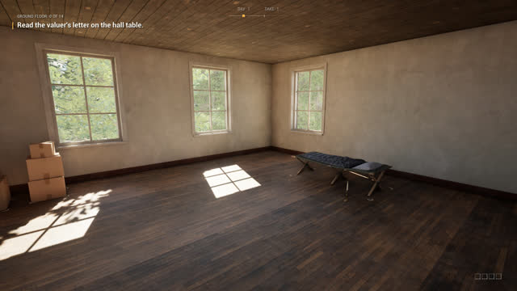
After 23:38: plain aged plaster.
From the running game Fri 13 Nov, 00:30
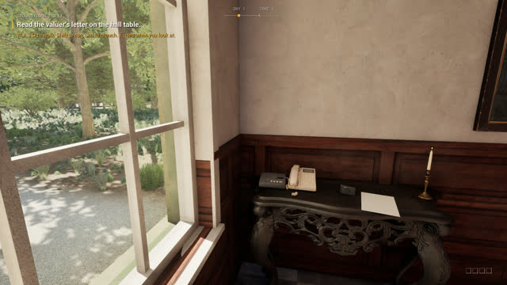
Before 22:37: plaster above a low wainscot.
From the running game Fri 13 Nov, 00:30
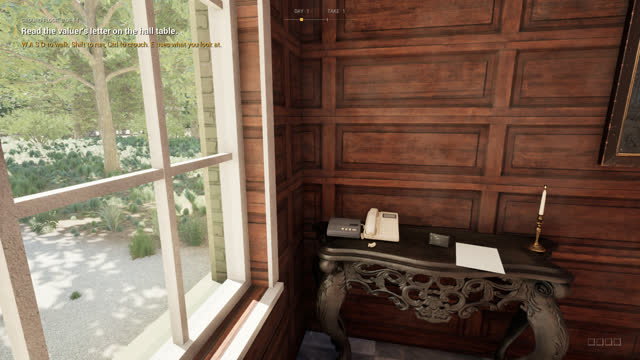
After 23:38: panelled to 3.2 metres.
From the running game Fri 13 Nov, 00:30
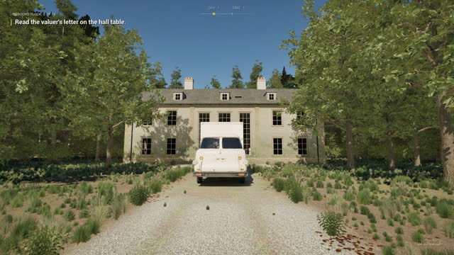
Before 22:37: pale render.
From the running game Fri 13 Nov, 00:30
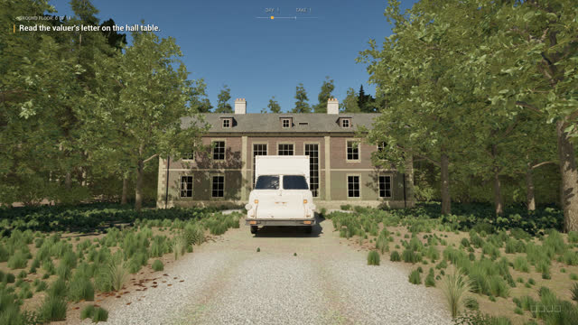
After 23:38: red brick, a Poly Haven surface (CC0).
From the running game Fri 13 Nov, 00:30
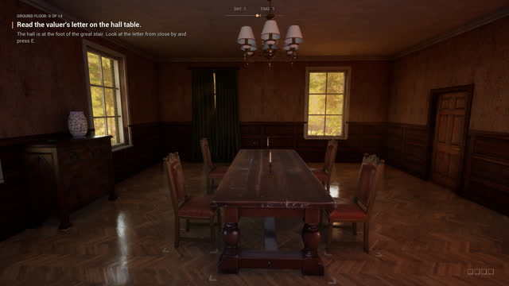
The dining room at dusk, 23:38. The floor is still too glossy, like new.
From the running game Fri 13 Nov, 00:30
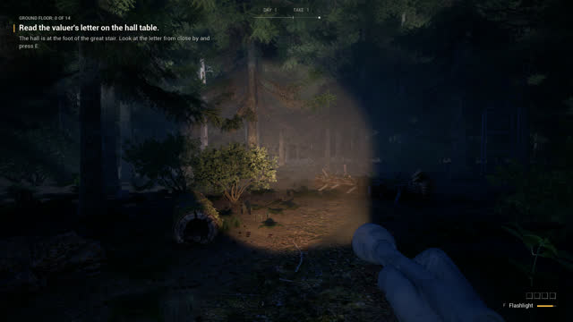
The forest path at night by flashlight, 23:38.
From the running game Fri 13 Nov, 00:30
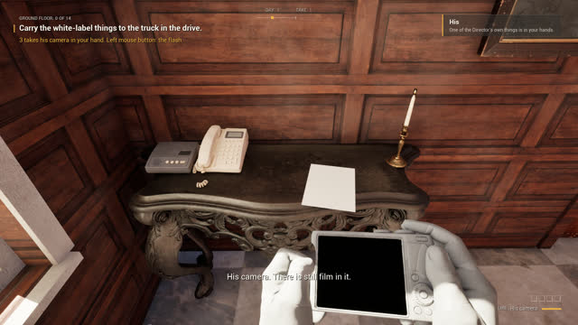
The hands and the camera at 23:38. Both are being replaced.
From the running game Fri 13 Nov, 00:30
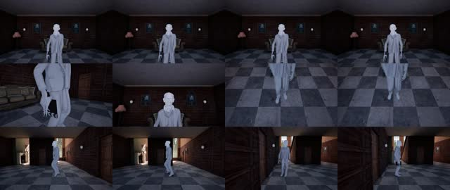
The second figure in the game at 00:13, white. Laid side by side by a script.
From the running game Fri 13 Nov, 00:30

Half past two: the first packaged game, ray tracing measured, and day one cut in half

The packaged game's title, 01:25. The menu stands on the live picture of the house, blurred.
From the running game Fri 13 Nov, 02:30
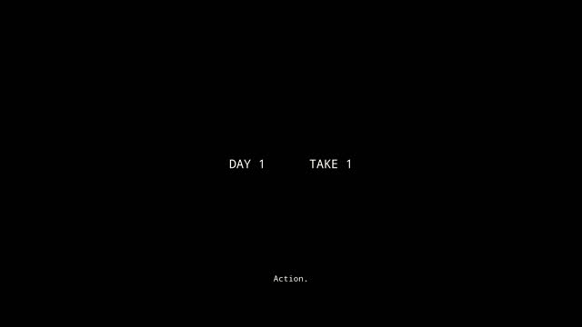
The slate, and the Director's far-off “Action.”
From the running game Fri 13 Nov, 02:30
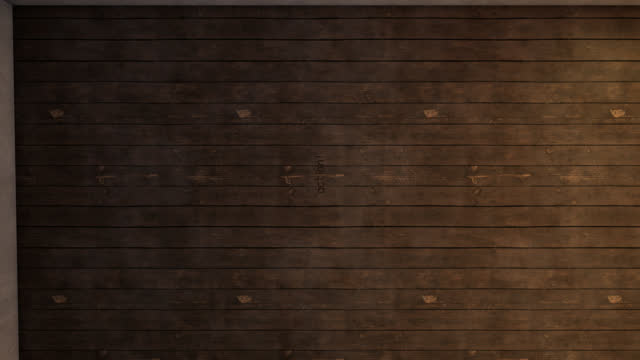
The waking: the ceiling over the camp bed, and the word cut into a board.
From the running game Fri 13 Nov, 02:30
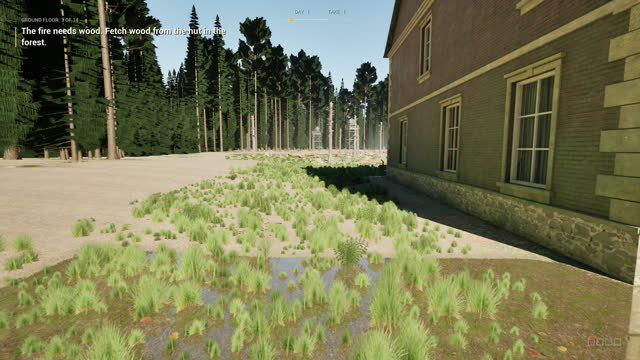
The packaged game at 1:30 into day one. The shrubs and leafy trees are gone; the conifers came with it.
From the running game Fri 13 Nov, 02:30
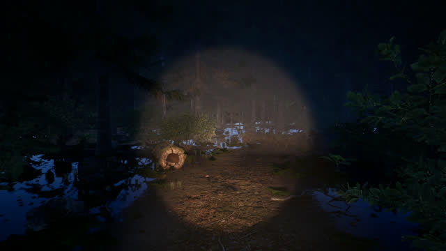
Before Software lighting: the sky's light leaks onto the ground under the trees.
From the running game Fri 13 Nov, 02:30
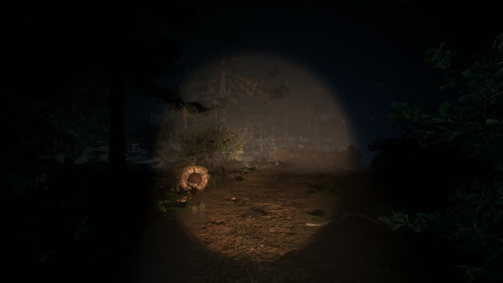
After Full ray tracing: dark where the crowns shade it.
From the running game Fri 13 Nov, 02:30
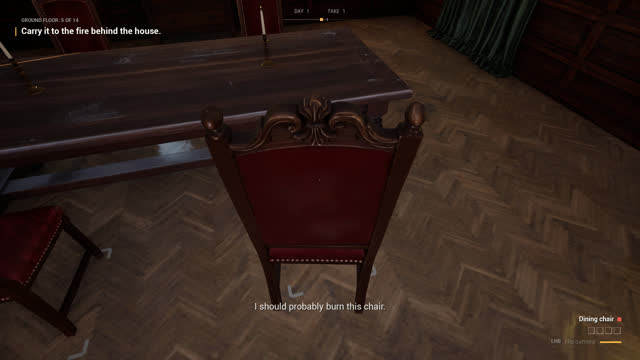
Day one on foot, 00:56. The buyer's line, as the developer imagined it.
From the running game Fri 13 Nov, 02:30
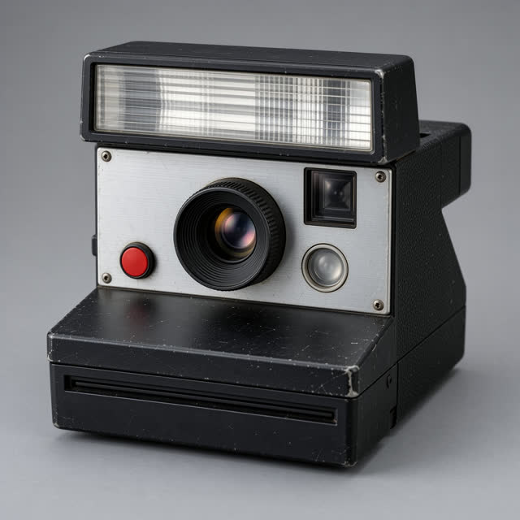
The reference picture: a boxy black instant film camera with a brushed aluminium front plate, a round lens, a red shutter button and a ribbed flash bar on top, on a grey studio background.
Image model Fri 13 Nov, 02:30
PromptA studio photograph of one old instant film camera of the early 1970s standing upright. A rigid boxy camera about fifteen centimetres wide,…264 words
A studio photograph of one old instant film camera of the early 1970s standing upright. A rigid boxy camera about fifteen centimetres wide, twelve high and fourteen deep: a body of black pebble-grained plastic, a flat front plate of dull brushed aluminium held by four small screws, a large round lens in a short black barrel in the middle of the front with a small round light sensor window beside it, a square viewfinder window above the lens to one side, a round red shutter button on the front, a long flash bar with a clear ribbed window across the whole top, and below the front plate a black step with a wide thin slot along its front edge where the print comes out. The plastic is scuffed and dusty, the aluminium scratched, the corners worn pale. The front step is plain black grained plastic from side to side, all one colour. Centred, the whole camera in frame with clear space around it, three-quarter view from the front and a little above so the front, the top with the flash and one side are seen. A seamless plain mid-grey studio background, soft even studio lighting from all sides, no cast shadow on the background. Photorealistic product photograph, natural colour, sharp from front to back. Nothing else in the picture: no neck strap, no photograph coming out, no hand, no film pack, no other objects. The camera is completely plain, only black, silver and one red button: no text, no letters, no numerals, no scale markings, no symbols, no logos, no brand names, no badge.
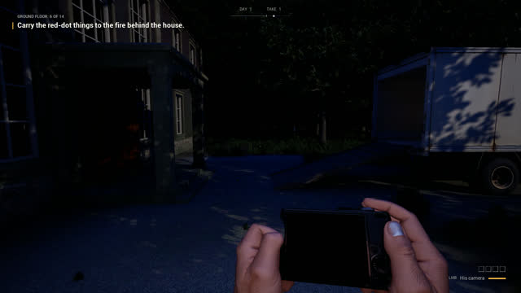
Hands with skin, 00:57, still holding the old compact camera.
From the running game Fri 13 Nov, 02:30
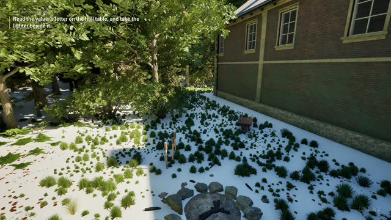
The ground, white, 01:51 build.
From the running game Fri 13 Nov, 02:30
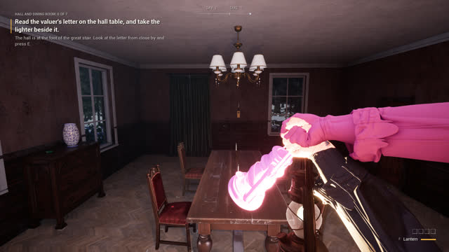
The lantern's hand, magenta, 01:51 build.
From the running game Fri 13 Nov, 02:30
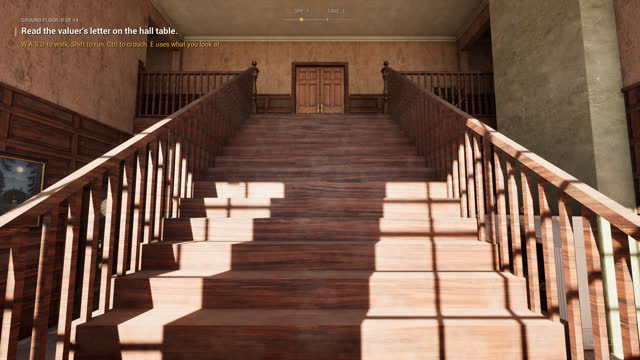
Before 23:38.
From the running game Fri 13 Nov, 02:30
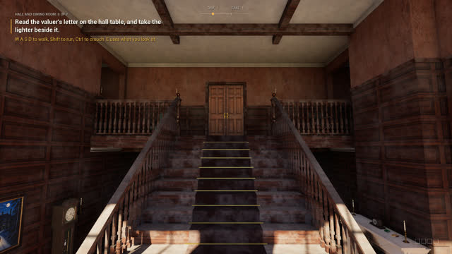
After 01:51: beams, turned balusters, a runner with brass rods.
From the running game Fri 13 Nov, 02:30

Half past four: day one is cleared on foot, the ground comes back, and the Director gets his face
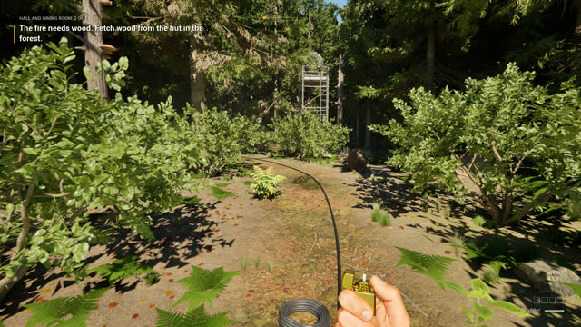
1:30 into the day: on the path to the hut, the lighter in hand. The black cable is the dead director's, from his lamps to the yard.
From the running game Fri 13 Nov, 04:30
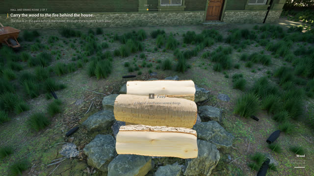
3:00: wood for the fire. The logs look freshly cut, too pale for wood that has lain in a hut for fifty years.
From the running game Fri 13 Nov, 04:30

5:15: his camera, the instant camera, in the buyer's hands.
From the running game Fri 13 Nov, 04:30

Before 01:51: white, the ground's surface missing.
From the running game Fri 13 Nov, 04:30
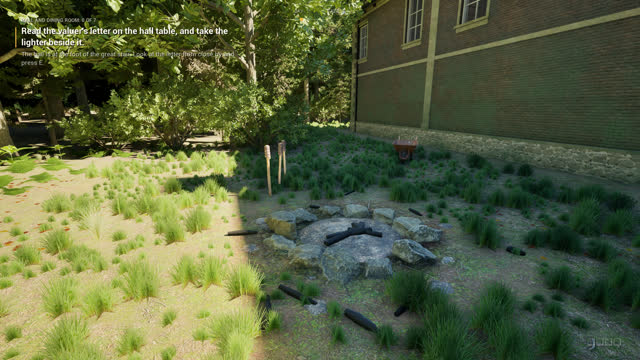
After 03:14: earth and grass again.
From the running game Fri 13 Nov, 04:30
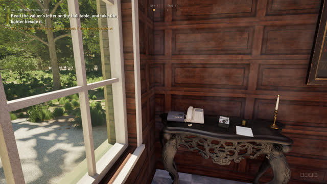
The hall table at 03:14, where day one begins: the letter, the lighter beside it, and his camera.
From the running game Fri 13 Nov, 04:30
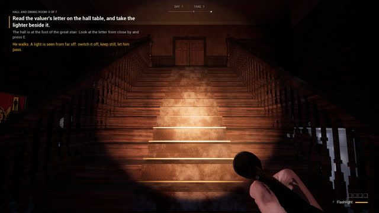
The hall at night, 03:14. The guide's line after “Places.” The pale shapes at the right edge are a fault the verifier marked.
From the running game Fri 13 Nov, 04:30
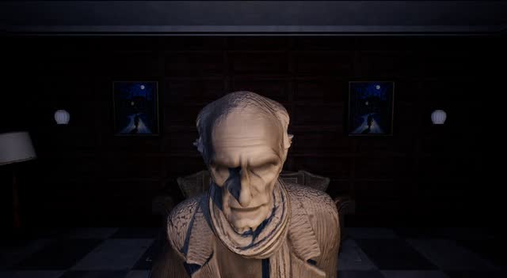
Before The first figure, from 19:10.
From the running game Fri 13 Nov, 04:30
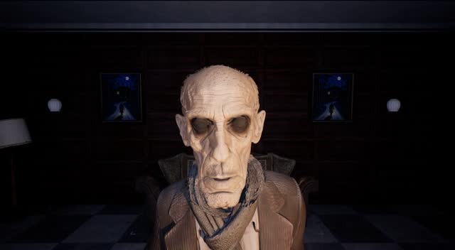
After The second figure, made at 23:20, in the game after one o'clock.
From the running game Fri 13 Nov, 04:30


The morning after: what one night of eight agents made, in plain words
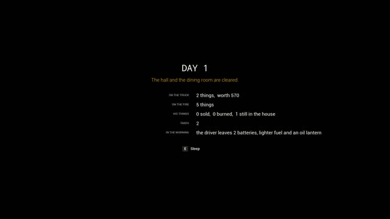
The end of day one in the packaged game, just after five. What the truck's load sold for decides what is in the morning's box.
From the running game Fri 13 Nov, 06:15
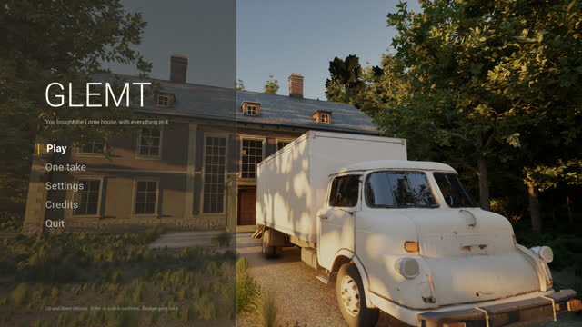
The title, from the zip.
From the running game Fri 13 Nov, 06:15

The last chair on the fire, in the packaged game.
From the running game Fri 13 Nov, 06:15
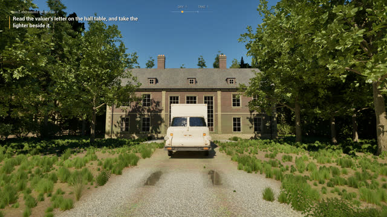
The house from the gate, 04:34.
From the running game Fri 13 Nov, 06:15
The hall, 04:34, with the agent's message on the answering machine.
From the running game Fri 13 Nov, 06:15
The dining room at dusk, 04:34.
From the running game Fri 13 Nov, 06:15

The Director, 2.5 metres off, 04:34. The guide warns: your light can be seen.
From the running game Fri 13 Nov, 06:15

The forest at night, 04:34.
From the running game Fri 13 Nov, 06:15
The hut at night, 04:34.
From the running game Fri 13 Nov, 06:15
Night, flashlight on, 04:34: far too light for a house with no power.
From the running game Fri 13 Nov, 06:15
The buyer's room, 04:34.
From the running game Fri 13 Nov, 06:15


No picture of that kind yet.